2 Working with Data Frames in R
2.1 The example dataset
The data.frame structure in R is the main data structure for storing and analyzing data. For example, when a csv-file is imported into the R session, it becomes a data frame.
To explore how to work with data frames in R, we will use a dataset that is widely used for different statistical experimens. This dataset is called the German Credit Data dataset.
We can import this dataset from:
https://archive.ics.uci.edu/ml/datasets/statlog+(german+credit+data)
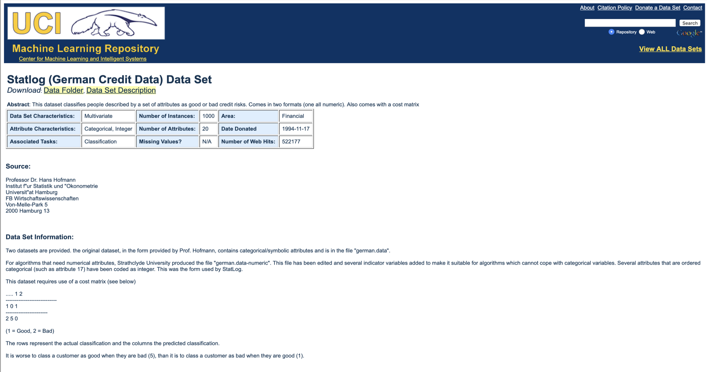
In the example this dataset is saved as “german_data_clean.csv” in our working directory. To keep your project tidy, you might consider creating an extra folder in which you want to store all your datasets. In this example project we have created a directory called data:
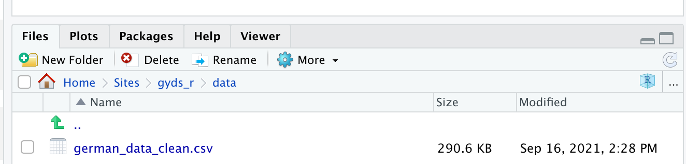
2.2 Importing data with RStudio
In RStudio, it is easy to import a csv dataset into our current R session:
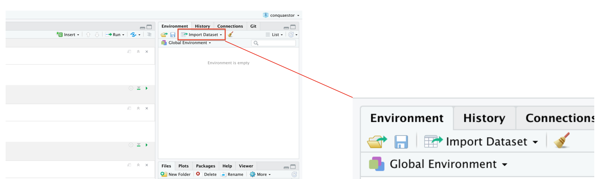
RStudio shows us a preview of the dataset we select to open:
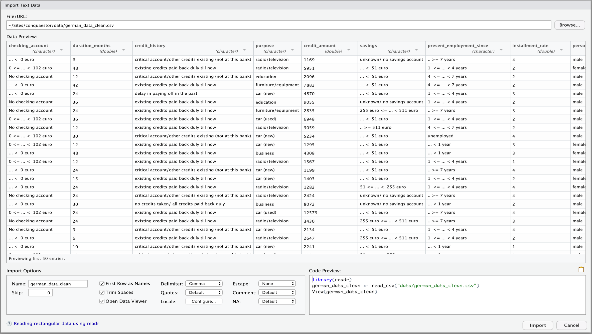
Opening the dataset in R will generate the R code that is needed to import the dataset in the R-session:
library(readr)
german_data_clean <- read_csv("data/german_data_clean.csv")## Rows: 1000 Columns: 21## ── Column specification ────────────────────────────────────────────────────────
## Delimiter: ","
## chr (13): checking_account, credit_history, purpose, savings, present_employ...
## dbl (8): duration_months, credit_amount, installment_rate, present_residenc...##
## ℹ Use `spec()` to retrieve the full column specification for this data.
## ℹ Specify the column types or set `show_col_types = FALSE` to quiet this message.View(german_data_clean)Note that you do not have to type in this code yourself, this code is automatically generated when we import our dataset with the Import Dataset button in RStudio.
2.3 Exploring data frames in R
Now the dataset is imported as a data frame in R, we can use many functions of R to select or modify this dataset.
For our convenience, we will rename the dataset for now:
data <- german_data_clean
rm(german_data_clean)Showing the dimensions of the data frame
dim(data)## [1] 1000 21Number of rows of the data frame
nrow(data)## [1] 1000Number of columns of the data frame
ncol(data)## [1] 21Column names of the data frame
names(data)## [1] "checking_account" "duration_months"
## [3] "credit_history" "purpose"
## [5] "credit_amount" "savings"
## [7] "present_employment_since" "installment_rate"
## [9] "personal_status_sex" "other_deptors"
## [11] "present_residence" "property"
## [13] "age_years" "other_installment_plans"
## [15] "housing" "existing_credits"
## [17] "job" "people_liable_maintenance"
## [19] "telephone" "foreign_worker"
## [21] "response"Informative description of the data frame
str(data)## spec_tbl_df [1,000 × 21] (S3: spec_tbl_df/tbl_df/tbl/data.frame)
## $ checking_account : chr [1:1000] "... < 0 euro" "0 <= ... < 102 euro" "No checking account" "... < 0 euro" ...
## $ duration_months : num [1:1000] 6 48 12 42 24 36 24 36 12 30 ...
## $ credit_history : chr [1:1000] "critical account/other credits existing (not at this bank)" "existing credits paid back duly till now" "critical account/other credits existing (not at this bank)" "existing credits paid back duly till now" ...
## $ purpose : chr [1:1000] "radio/television" "radio/television" "education" "furniture/equipment" ...
## $ credit_amount : num [1:1000] 1169 5951 2096 7882 4870 ...
## $ savings : chr [1:1000] "unknown/ no savings account" "... < 51 euro" "... < 51 euro" "... < 51 euro" ...
## $ present_employment_since : chr [1:1000] ".. >= 7 years" "1 <= ... < 4 years" "4 <= ... < 7 years" "4 <= ... < 7 years" ...
## $ installment_rate : num [1:1000] 4 2 2 2 3 2 3 2 2 4 ...
## $ personal_status_sex : chr [1:1000] "male : single" "female : divorced/separated/married" "male : single" "male : single" ...
## $ other_deptors : chr [1:1000] "none" "none" "none" "guarantor" ...
## $ present_residence : num [1:1000] 4 2 3 4 4 4 4 2 4 2 ...
## $ property : chr [1:1000] "real estate" "real estate" "real estate" "(if not real estate) building society savings agreement/ life insurance" ...
## $ age_years : num [1:1000] 67 22 49 45 53 35 53 35 61 28 ...
## $ other_installment_plans : chr [1:1000] "none" "none" "none" "none" ...
## $ housing : chr [1:1000] "own" "own" "own" "for free" ...
## $ existing_credits : num [1:1000] 2 1 1 1 2 1 1 1 1 2 ...
## $ job : chr [1:1000] "skilled employee / official" "skilled employee / official" "unskilled - resident" "skilled employee / official" ...
## $ people_liable_maintenance: num [1:1000] 1 1 2 2 2 2 1 1 1 1 ...
## $ telephone : chr [1:1000] "yes, registered under the customers name" "none" "none" "none" ...
## $ foreign_worker : chr [1:1000] "yes" "yes" "yes" "yes" ...
## $ response : num [1:1000] 0 1 0 0 1 0 0 0 0 1 ...
## - attr(*, "spec")=
## .. cols(
## .. checking_account = col_character(),
## .. duration_months = col_double(),
## .. credit_history = col_character(),
## .. purpose = col_character(),
## .. credit_amount = col_double(),
## .. savings = col_character(),
## .. present_employment_since = col_character(),
## .. installment_rate = col_double(),
## .. personal_status_sex = col_character(),
## .. other_deptors = col_character(),
## .. present_residence = col_double(),
## .. property = col_character(),
## .. age_years = col_double(),
## .. other_installment_plans = col_character(),
## .. housing = col_character(),
## .. existing_credits = col_double(),
## .. job = col_character(),
## .. people_liable_maintenance = col_double(),
## .. telephone = col_character(),
## .. foreign_worker = col_character(),
## .. response = col_double()
## .. )
## - attr(*, "problems")=<externalptr>Selecting a column of the data frame
data$credit_amount## [1] 1169 5951 2096 7882 4870 9055 2835 6948 3059 5234 1295 4308
## [13] 1567 1199 1403 1282 2424 8072 12579 3430 2134 2647 2241 1804
## [25] 2069 1374 426 409 2415 6836 1913 4020 5866 1264 1474 4746
## [37] 6110 2100 1225 458 2333 1158 6204 6187 6143 1393 2299 1352
## [49] 7228 2073 2333 5965 1262 3378 2225 783 6468 9566 1961 6229
## [61] 1391 1537 1953 14421 3181 5190 2171 1007 1819 2394 8133 730
## [73] 1164 5954 1977 1526 3965 4771 9436 3832 5943 1213 1568 1755
## [85] 2315 1412 1295 12612 2249 1108 618 1409 797 3617 1318 15945
## [97] 2012 2622 2337 7057 1469 2323 932 1919 2445 11938 6458 6078
## [109] 7721 1410 1449 392 6260 7855 1680 3578 7174 2132 4281 2366
## [121] 1835 3868 1768 781 1924 2121 701 639 1860 3499 8487 6887
## [133] 2708 1984 10144 1240 8613 766 2728 1881 709 4795 3416 2462
## [145] 2288 3566 860 682 5371 1582 1346 1924 5848 7758 6967 1282
## [157] 1288 339 3512 1898 2872 1055 1262 7308 909 2978 1131 1577
## [169] 3972 1935 950 763 2064 1414 3414 7485 2577 338 1963 571
## [181] 9572 4455 1647 3777 884 1360 5129 1175 674 3244 4591 3844
## [193] 3915 2108 3031 1501 1382 951 2760 4297 936 1168 5117 902
## [205] 1495 10623 1935 1424 6568 1413 3074 3835 5293 1908 3342 932
## [217] 3104 3913 3021 1364 625 1200 707 2978 4657 2613 10961 7865
## [229] 1478 3149 4210 2507 2141 866 1544 1823 14555 2767 1291 2522
## [241] 915 1595 4605 1185 3447 1258 717 1204 1925 433 666 2251
## [253] 2150 4151 2030 7418 2684 2149 3812 1154 1657 1603 5302 2748
## [265] 1231 802 6304 1533 8978 999 2662 1402 12169 3060 11998 2697
## [277] 2404 1262 4611 1901 3368 1574 1445 1520 3878 10722 4788 7582
## [289] 1092 1024 1076 9398 6419 4796 7629 9960 4675 1287 2515 2745
## [301] 672 3804 1344 1038 10127 1543 4811 727 1237 276 5381 5511
## [313] 3749 685 1494 2746 708 4351 701 3643 4249 1938 2910 2659
## [325] 1028 3398 5801 1525 4473 1068 6615 1864 7408 11590 4110 3384
## [337] 2101 1275 4169 1521 5743 3599 3213 4439 3949 1459 882 3758
## [349] 1743 1136 1236 959 3229 6199 727 1246 2331 4463 776 2406
## [361] 1239 3399 2247 1766 2473 1542 3850 3650 3446 3001 3079 6070
## [373] 2146 13756 14782 7685 2320 846 14318 362 2212 12976 1283 1330
## [385] 4272 2238 1126 7374 2326 1449 1820 983 3249 1957 2406 11760
## [397] 2578 2348 1223 1516 1473 1887 8648 802 2899 2039 2197 1053
## [409] 3235 939 1967 7253 2292 1597 1381 5842 2579 8471 2782 1042
## [421] 3186 2028 958 1591 2762 2779 2743 1149 1313 1190 3448 11328
## [433] 1872 2058 2136 1484 660 1287 3394 609 1884 1620 2629 719
## [445] 5096 1244 1842 2576 1424 1512 11054 518 2759 2670 4817 2679
## [457] 3905 3386 343 4594 3620 1721 3017 754 1950 2924 1659 7238
## [469] 2764 4679 3092 448 654 1238 1245 3114 2569 5152 1037 1478
## [481] 3573 1201 3622 960 1163 1209 3077 3757 1418 3518 1934 8318
## [493] 1237 368 2122 2996 9034 1585 1301 1323 3123 5493 1126 1216
## [505] 1207 1309 2360 6850 1413 8588 759 4686 2687 585 2255 609
## [517] 1361 7127 1203 700 5507 3190 7119 3488 1113 7966 1532 1503
## [529] 2302 662 2273 2631 1503 1311 3105 2319 1374 3612 7763 3049
## [541] 1534 2032 6350 2864 1255 1333 2022 1552 626 8858 996 1750
## [553] 6999 1995 1199 1331 2278 5003 3552 1928 2964 1546 683 12389
## [565] 4712 1553 1372 2578 3979 6758 3234 5954 5433 806 1082 2788
## [577] 2930 1927 2820 937 1056 3124 1388 2384 2133 2039 2799 1289
## [589] 1217 2246 385 1965 1572 2718 1358 931 1442 4241 2775 3863
## [601] 2329 918 1837 3349 1275 2828 4526 2671 2051 1300 741 1240
## [613] 3357 3632 1808 12204 9157 3676 3441 640 3652 1530 3914 1858
## [625] 2600 1979 2116 1437 4042 3832 3660 1553 1444 1980 1355 1393
## [637] 1376 15653 1493 4370 750 1308 4623 1851 1880 7980 4583 1386
## [649] 947 684 7476 1922 2303 8086 2346 3973 888 10222 4221 6361
## [661] 1297 900 2241 1050 1047 6314 3496 3609 4843 3017 4139 5742
## [673] 10366 2080 2580 4530 5150 5595 2384 1453 1538 2279 1478 5103
## [685] 9857 6527 1347 2862 2753 3651 975 2631 2896 4716 2284 1236
## [697] 1103 926 1800 1905 1123 6331 1377 2503 2528 5324 6560 2969
## [709] 1206 2118 629 1198 2476 1138 14027 7596 3077 1505 3148 6148
## [721] 1337 433 1228 790 2570 250 1316 1882 6416 1275 6403 1987
## [733] 760 2603 3380 3990 11560 4380 6761 4280 2325 1048 3160 2483
## [745] 14179 1797 2511 1274 5248 3029 428 976 841 5771 1555 1285
## [757] 1299 1271 1393 691 5045 2124 2214 12680 2463 1155 3108 2901
## [769] 3617 1655 2812 8065 3275 2223 1480 1371 3535 3509 5711 3872
## [781] 4933 1940 1410 836 6468 1941 2675 2751 6224 5998 1188 6313
## [793] 1221 2892 3062 2301 7511 1258 717 1549 1597 1795 4272 976
## [805] 7472 9271 590 930 9283 1778 907 484 9629 3051 3931 7432
## [817] 1338 1554 15857 1345 1101 3016 2712 731 3780 1602 3966 4165
## [829] 8335 6681 2375 1216 11816 5084 2327 1082 886 601 2957 2611
## [841] 5179 2993 1943 1559 3422 3976 6761 1249 1364 709 2235 4042
## [853] 1471 1442 10875 1474 894 3343 3959 3577 5804 2169 2439 4526
## [865] 2210 2221 2389 3331 7409 652 7678 1343 1382 874 3590 1322
## [877] 1940 3595 1422 6742 7814 9277 2181 1098 4057 795 2825 15672
## [889] 6614 7824 2442 1829 2171 5800 1169 8947 2606 1592 2186 4153
## [901] 2625 3485 10477 1386 1278 1107 3763 3711 3594 3195 4454 4736
## [913] 2991 2142 3161 18424 2848 14896 2359 3345 1817 12749 1366 2002
## [925] 6872 697 1049 10297 1867 1344 1747 1670 1224 522 1498 1919
## [937] 745 2063 6288 6842 3527 1546 929 1455 1845 8358 3349 2859
## [949] 1533 3621 3590 2145 4113 10974 1893 1231 3656 1154 4006 3069
## [961] 1740 2353 3556 2397 454 1715 2520 3568 7166 3939 1514 7393
## [973] 1193 7297 2831 1258 753 2427 2538 1264 8386 4844 2923 8229
## [985] 2028 1433 6289 1409 6579 1743 3565 1569 1936 3959 2390 1736
## [997] 3857 804 1845 4576An alternative for selecting a column of a data frame:
data["credit_amount"]## # A tibble: 1,000 × 1
## credit_amount
## <dbl>
## 1 1169
## 2 5951
## 3 2096
## 4 7882
## 5 4870
## 6 9055
## 7 2835
## 8 6948
## 9 3059
## 10 5234
## # … with 990 more rowsProviding a summary of a variable:
summary(data$credit_amount)## Min. 1st Qu. Median Mean 3rd Qu. Max.
## 250 1366 2320 3271 3972 18424Providing a summary of the entire data frame
summary(data)## checking_account duration_months credit_history purpose
## Length:1000 Min. : 4.0 Length:1000 Length:1000
## Class :character 1st Qu.:12.0 Class :character Class :character
## Mode :character Median :18.0 Mode :character Mode :character
## Mean :20.9
## 3rd Qu.:24.0
## Max. :72.0
## credit_amount savings present_employment_since installment_rate
## Min. : 250 Length:1000 Length:1000 Min. :1.000
## 1st Qu.: 1366 Class :character Class :character 1st Qu.:2.000
## Median : 2320 Mode :character Mode :character Median :3.000
## Mean : 3271 Mean :2.973
## 3rd Qu.: 3972 3rd Qu.:4.000
## Max. :18424 Max. :4.000
## personal_status_sex other_deptors present_residence property
## Length:1000 Length:1000 Min. :1.000 Length:1000
## Class :character Class :character 1st Qu.:2.000 Class :character
## Mode :character Mode :character Median :3.000 Mode :character
## Mean :2.845
## 3rd Qu.:4.000
## Max. :4.000
## age_years other_installment_plans housing existing_credits
## Min. :19.00 Length:1000 Length:1000 Min. :1.000
## 1st Qu.:27.00 Class :character Class :character 1st Qu.:1.000
## Median :33.00 Mode :character Mode :character Median :1.000
## Mean :35.55 Mean :1.407
## 3rd Qu.:42.00 3rd Qu.:2.000
## Max. :75.00 Max. :4.000
## job people_liable_maintenance telephone
## Length:1000 Min. :1.000 Length:1000
## Class :character 1st Qu.:1.000 Class :character
## Mode :character Median :1.000 Mode :character
## Mean :1.155
## 3rd Qu.:1.000
## Max. :2.000
## foreign_worker response
## Length:1000 Min. :0.0
## Class :character 1st Qu.:0.0
## Mode :character Median :0.0
## Mean :0.3
## 3rd Qu.:1.0
## Max. :1.0Getting the maximum value of a variable
max(data$credit_amount)## [1] 18424In some cases character variables of the data frame can be better described in combination with the factor function.
# not a useful description
summary(data$telephone)## Length Class Mode
## 1000 character character# better
summary(factor(data$property))## (if not optin 1 or 2) car or other, not in attribute
## 332
## (if not real estate) building society savings agreement/ life insurance
## 232
## real estate
## 282
## unknown / no property
## 1542.3.1 Selecting rows and columns in a data frame
Selecting rows
data[3:10,]## # A tibble: 8 × 21
## checking_account duration_months credit_history purpose credit_amount savings
## <chr> <dbl> <chr> <chr> <dbl> <chr>
## 1 No checking acco… 12 critical acco… educat… 2096 ... < …
## 2 ... < 0 euro 42 existing cred… furnit… 7882 ... < …
## 3 ... < 0 euro 24 delay in payi… car (n… 4870 ... < …
## 4 No checking acco… 36 existing cred… educat… 9055 unknow…
## 5 No checking acco… 24 existing cred… furnit… 2835 255 eu…
## 6 0 <= ... < 102 … 36 existing cred… car (u… 6948 ... < …
## 7 No checking acco… 12 existing cred… radio/… 3059 .. >= …
## 8 0 <= ... < 102 … 30 critical acco… car (n… 5234 ... < …
## # … with 15 more variables: present_employment_since <chr>,
## # installment_rate <dbl>, personal_status_sex <chr>, other_deptors <chr>,
## # present_residence <dbl>, property <chr>, age_years <dbl>,
## # other_installment_plans <chr>, housing <chr>, existing_credits <dbl>,
## # job <chr>, people_liable_maintenance <dbl>, telephone <chr>,
## # foreign_worker <chr>, response <dbl>Selecting columns
data[,4]## # A tibble: 1,000 × 1
## purpose
## <chr>
## 1 radio/television
## 2 radio/television
## 3 education
## 4 furniture/equipment
## 5 car (new)
## 6 education
## 7 furniture/equipment
## 8 car (used)
## 9 radio/television
## 10 car (new)
## # … with 990 more rowsSelecting multiple rows
# rij 5 t/m 10 selecteren
data[5:10, ]## # A tibble: 6 × 21
## checking_account duration_months credit_history purpose credit_amount savings
## <chr> <dbl> <chr> <chr> <dbl> <chr>
## 1 ... < 0 euro 24 delay in payi… car (n… 4870 ... < …
## 2 No checking acco… 36 existing cred… educat… 9055 unknow…
## 3 No checking acco… 24 existing cred… furnit… 2835 255 eu…
## 4 0 <= ... < 102 … 36 existing cred… car (u… 6948 ... < …
## 5 No checking acco… 12 existing cred… radio/… 3059 .. >= …
## 6 0 <= ... < 102 … 30 critical acco… car (n… 5234 ... < …
## # … with 15 more variables: present_employment_since <chr>,
## # installment_rate <dbl>, personal_status_sex <chr>, other_deptors <chr>,
## # present_residence <dbl>, property <chr>, age_years <dbl>,
## # other_installment_plans <chr>, housing <chr>, existing_credits <dbl>,
## # job <chr>, people_liable_maintenance <dbl>, telephone <chr>,
## # foreign_worker <chr>, response <dbl>Selecting row 5 to 10 and column 9 to 11
data[5:10, c('purpose', 'age_years')]## # A tibble: 6 × 2
## purpose age_years
## <chr> <dbl>
## 1 car (new) 53
## 2 education 35
## 3 furniture/equipment 53
## 4 car (used) 35
## 5 radio/television 61
## 6 car (new) 28Selecting row 1, 3, 5, 7 and column 2, 4, 6, 8:
data[c(1,3,5,7), c(2,4,6,8)]## # A tibble: 4 × 4
## duration_months purpose savings installment_rate
## <dbl> <chr> <chr> <dbl>
## 1 6 radio/television unknown/ no savings account 4
## 2 12 education ... < 51 euro 2
## 3 24 car (new) ... < 51 euro 3
## 4 24 furniture/equipment 255 euro <= ... < 511 euro 32.3.2 Filtering data frames
Loans with a minimal duration of 20 (months)
data[data$duration_months >= 20, ]## # A tibble: 454 × 21
## checking_account duration_months credit_history purpose credit_amount savings
## <chr> <dbl> <chr> <chr> <dbl> <chr>
## 1 0 <= ... < 102… 48 existing cred… radio/… 5951 ... < …
## 2 ... < 0 euro 42 existing cred… furnit… 7882 ... < …
## 3 ... < 0 euro 24 delay in payi… car (n… 4870 ... < …
## 4 No checking acc… 36 existing cred… educat… 9055 unknow…
## 5 No checking acc… 24 existing cred… furnit… 2835 255 eu…
## 6 0 <= ... < 102… 36 existing cred… car (u… 6948 ... < …
## 7 0 <= ... < 102… 30 critical acco… car (n… 5234 ... < …
## 8 ... < 0 euro 48 existing cred… busine… 4308 ... < …
## 9 ... < 0 euro 24 critical acco… car (n… 1199 ... < …
## 10 ... < 0 euro 24 existing cred… radio/… 1282 51 <= …
## # … with 444 more rows, and 15 more variables: present_employment_since <chr>,
## # installment_rate <dbl>, personal_status_sex <chr>, other_deptors <chr>,
## # present_residence <dbl>, property <chr>, age_years <dbl>,
## # other_installment_plans <chr>, housing <chr>, existing_credits <dbl>,
## # job <chr>, people_liable_maintenance <dbl>, telephone <chr>,
## # foreign_worker <chr>, response <dbl>Filter for single males
# first, checkout what the values look like that we would like to filter
unique(data$personal_status_sex)## [1] "male : single" "female : divorced/separated/married"
## [3] "male : divorced/separated" "male : married/widowed"single_males <- data[data$personal_status_sex == "male : single", ]Displaying the data
single_males ## # A tibble: 548 × 21
## checking_account duration_months credit_history purpose credit_amount savings
## <chr> <dbl> <chr> <chr> <dbl> <chr>
## 1 ... < 0 euro 6 critical acco… radio/… 1169 unknow…
## 2 No checking acc… 12 critical acco… educat… 2096 ... < …
## 3 ... < 0 euro 42 existing cred… furnit… 7882 ... < …
## 4 ... < 0 euro 24 delay in payi… car (n… 4870 ... < …
## 5 No checking acc… 36 existing cred… educat… 9055 unknow…
## 6 No checking acc… 24 existing cred… furnit… 2835 255 eu…
## 7 0 <= ... < 102… 36 existing cred… car (u… 6948 ... < …
## 8 ... < 0 euro 24 critical acco… car (n… 1199 ... < …
## 9 No checking acc… 24 critical acco… radio/… 2424 unknow…
## 10 ... < 0 euro 30 no credits ta… busine… 8072 unknow…
## # … with 538 more rows, and 15 more variables: present_employment_since <chr>,
## # installment_rate <dbl>, personal_status_sex <chr>, other_deptors <chr>,
## # present_residence <dbl>, property <chr>, age_years <dbl>,
## # other_installment_plans <chr>, housing <chr>, existing_credits <dbl>,
## # job <chr>, people_liable_maintenance <dbl>, telephone <chr>,
## # foreign_worker <chr>, response <dbl>Apply multiple filters
data[data$personal_status_sex == "male : single" & data$age_years > 60 , ]## # A tibble: 30 × 21
## checking_account duration_months credit_history purpose credit_amount savings
## <chr> <dbl> <chr> <chr> <dbl> <chr>
## 1 ... < 0 euro 6 critical acco… radio/… 1169 unknow…
## 2 ... < 0 euro 60 delay in payi… busine… 6836 ... < …
## 3 0 <= ... < 102… 36 no credits ta… busine… 1953 ... < …
## 4 ... < 0 euro 12 critical acco… car (u… 1526 ... < …
## 5 >= 102 euro 10 critical acco… car (n… 781 ... < …
## 6 0 <= ... < 102… 12 existing cred… radio/… 766 255 eu…
## 7 0 <= ... < 102… 10 existing cred… car (n… 7308 ... < …
## 8 ... < 0 euro 21 critical acco… car (n… 571 ... < …
## 9 0 <= ... < 102… 16 critical acco… car (n… 1175 ... < …
## 10 >= 102 euro 30 delay in payi… busine… 1908 ... < …
## # … with 20 more rows, and 15 more variables: present_employment_since <chr>,
## # installment_rate <dbl>, personal_status_sex <chr>, other_deptors <chr>,
## # present_residence <dbl>, property <chr>, age_years <dbl>,
## # other_installment_plans <chr>, housing <chr>, existing_credits <dbl>,
## # job <chr>, people_liable_maintenance <dbl>, telephone <chr>,
## # foreign_worker <chr>, response <dbl>Creating calculated columns with the ifelse() function:
data$duration_type <- ifelse(data$duration_months <= 12, "short", "long")Show the values of the newly created column
summary(factor(data$duration_type))## long short
## 641 359Categorieen maken met nested
data$age_class <- cut(data$age_years, breaks = c(18, 25, 50, 65, 100), labels=c("young", "adult", "senior", "retired"))data$age_class <- cut(data$age_years,
breaks = c(18, 25, 50, 65, 100),
labels=c("young", "adult", "senior", "retired"))Check the categories:
summary.factor(data$age_class)## young adult senior retired
## 190 697 95 18table(data$age_class)##
## young adult senior retired
## 190 697 95 182.4 Data exploration with basic R visualisations
counts <- table(data$age_class)
barplot(counts, main="Loans by age class",
xlab="Age class")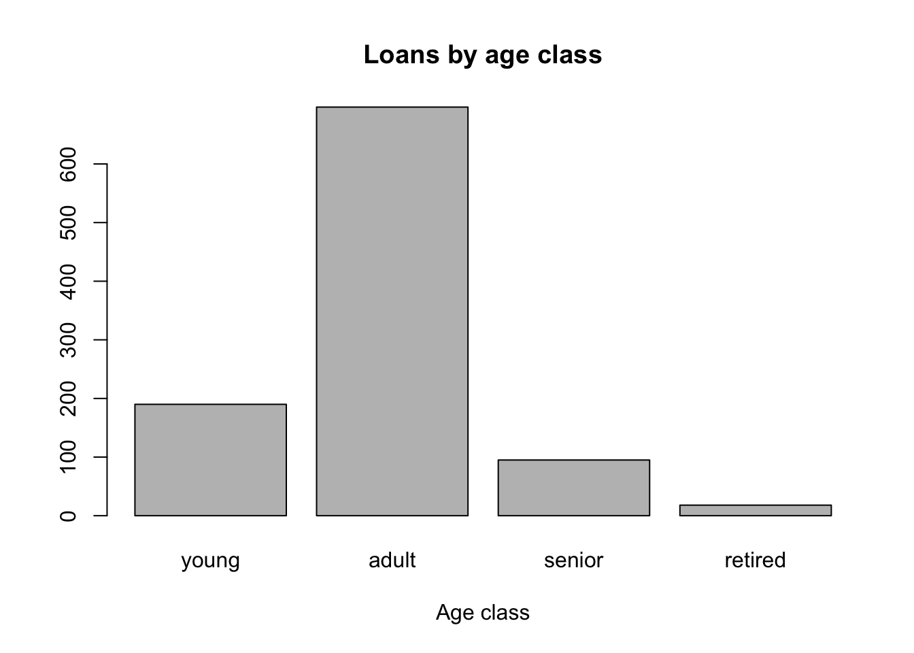
numbers <- c(1,2,3,4,5)
barplot(numbers)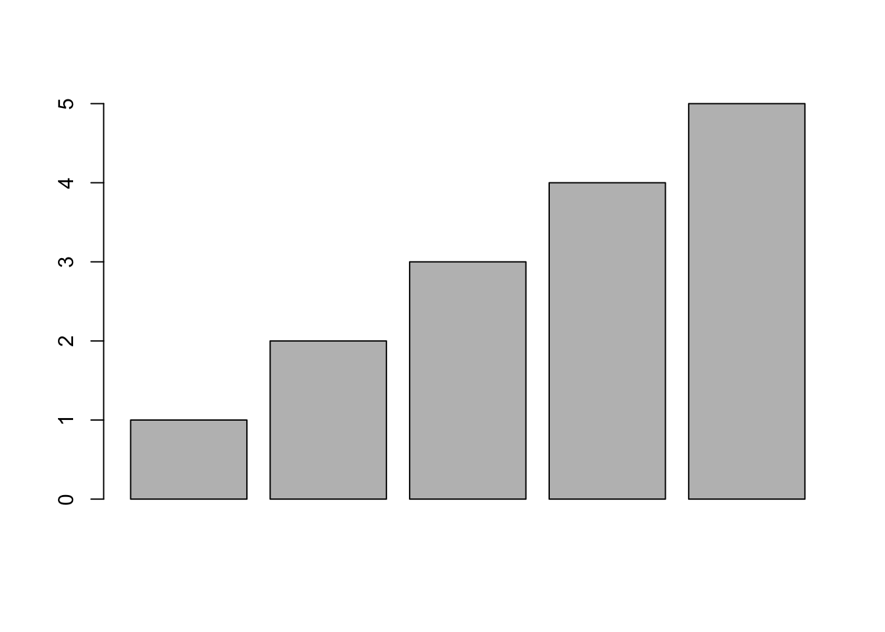
Additional markup options for the visualisation:
barplot(counts, width = 3,
space = 0,
col = "blue",
main = "Number of loans by Age Class",
xlab = "Age class",
ylab = "Aantal")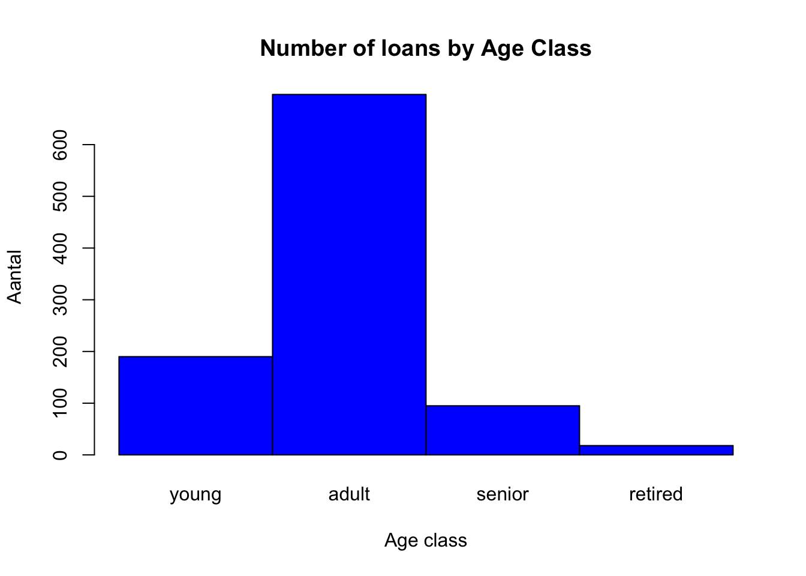
A simple scatter plot
plot(data$credit_amount, type = "l", lwd = "4", col= "#000000", main = "Credit amount")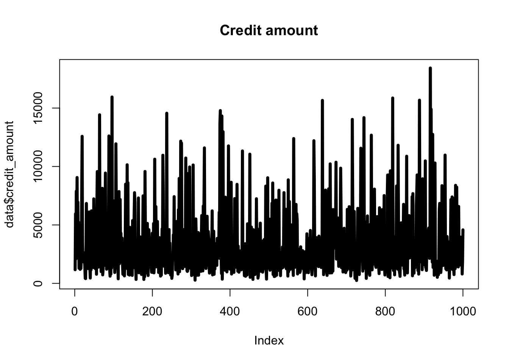
Boxplot
boxplot(data$credit_amount, notch = TRUE,
col = "red",
names = "Credit amount")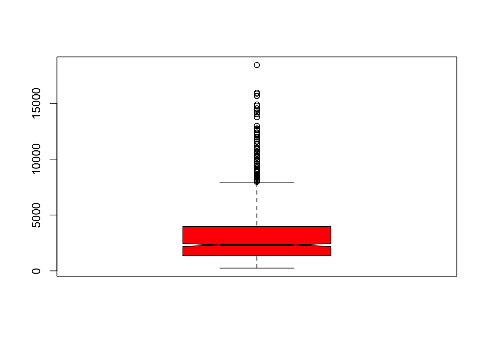
Creating a boxplot without outliers
boxplot(data$credit_amount, notch = TRUE,
col = "red",
names = "Credit amount",
outline = FALSE)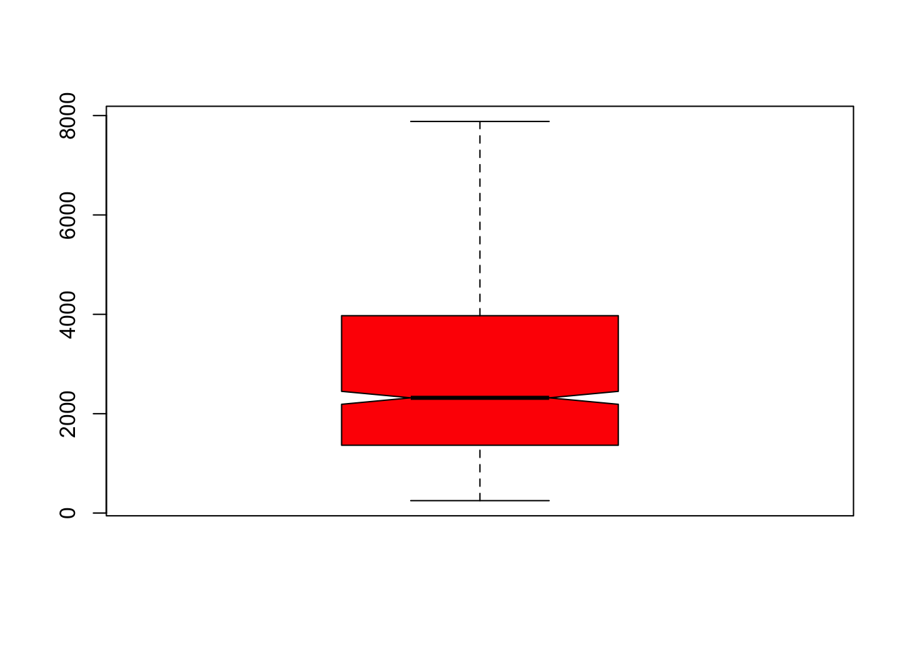
Creating a pie chart
pie(counts)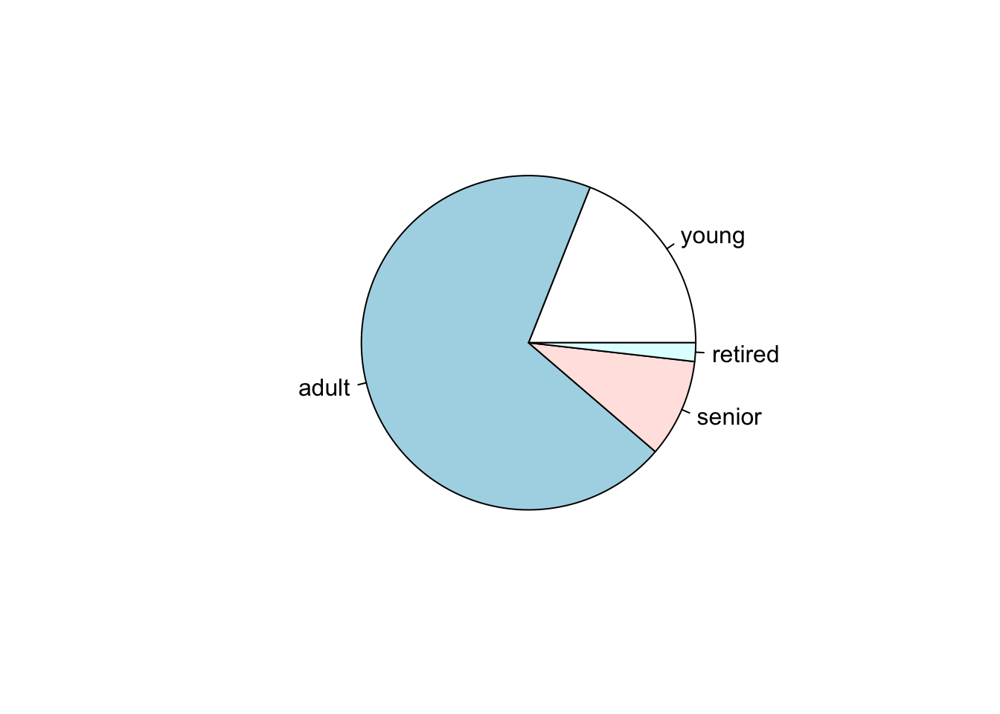
pie(counts, labels = names(counts), main="Age class")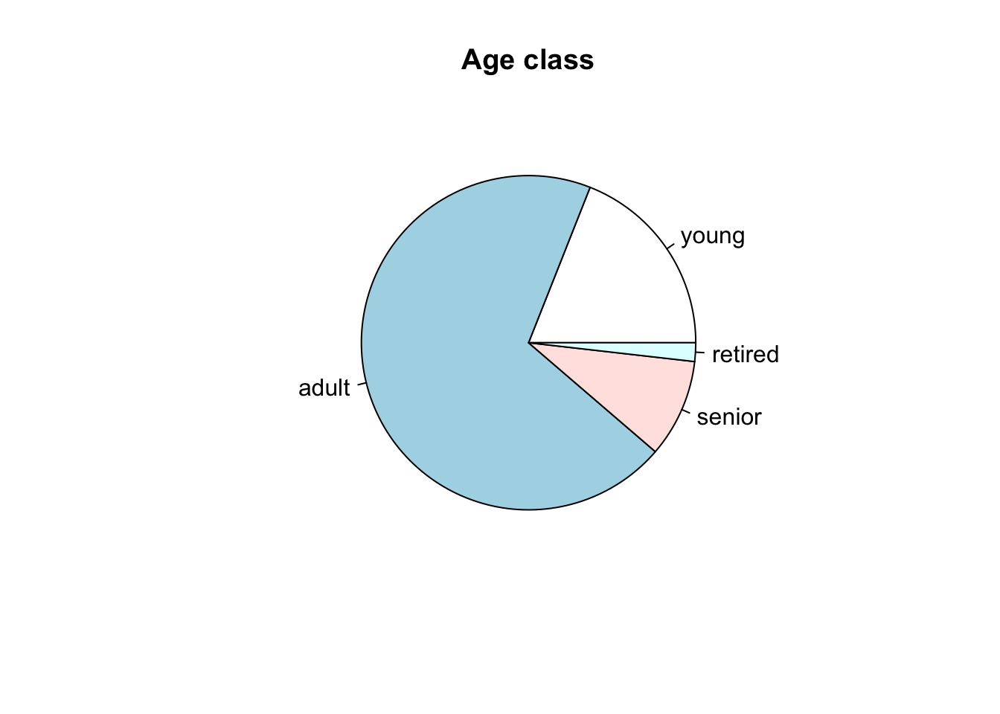
pie(counts,
labels = names(counts),
main="Loans by age class",
col = c("lightblue", "blue", "darkblue", "gray"),
sub = "Source: Loan research 2019: Arie Twigt") 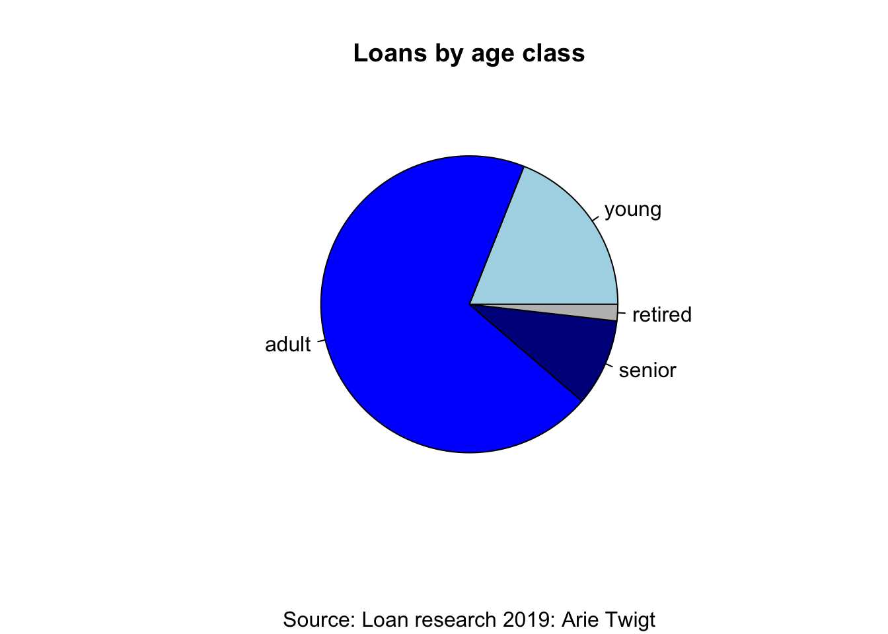
Histogram
hist(data$credit_amount)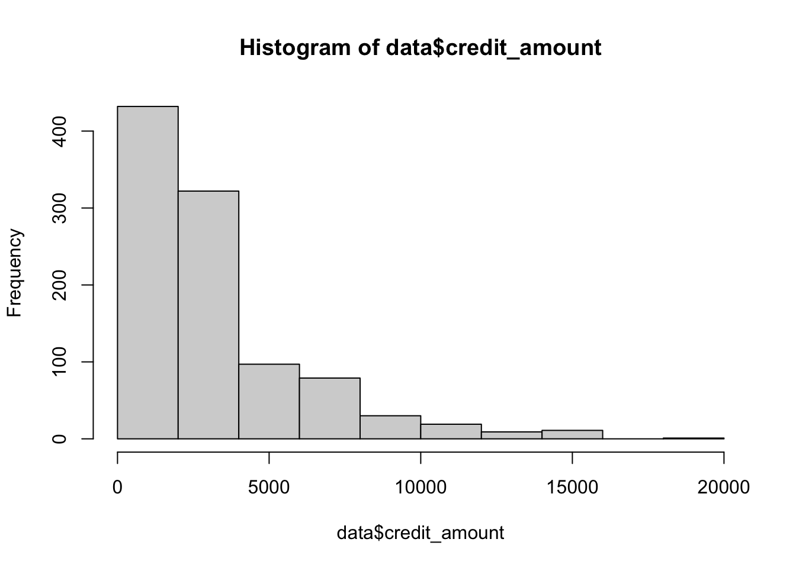
hist(data$credit_amount, breaks = 5)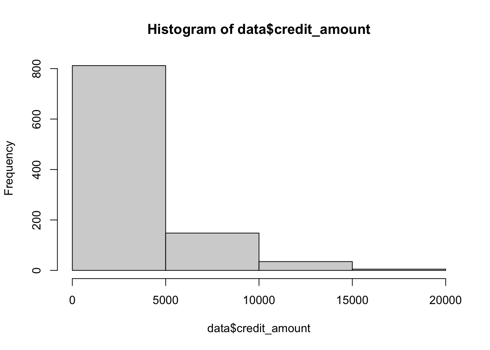
Plotting the distribution of a variable:
plot(density(data$credit_amount))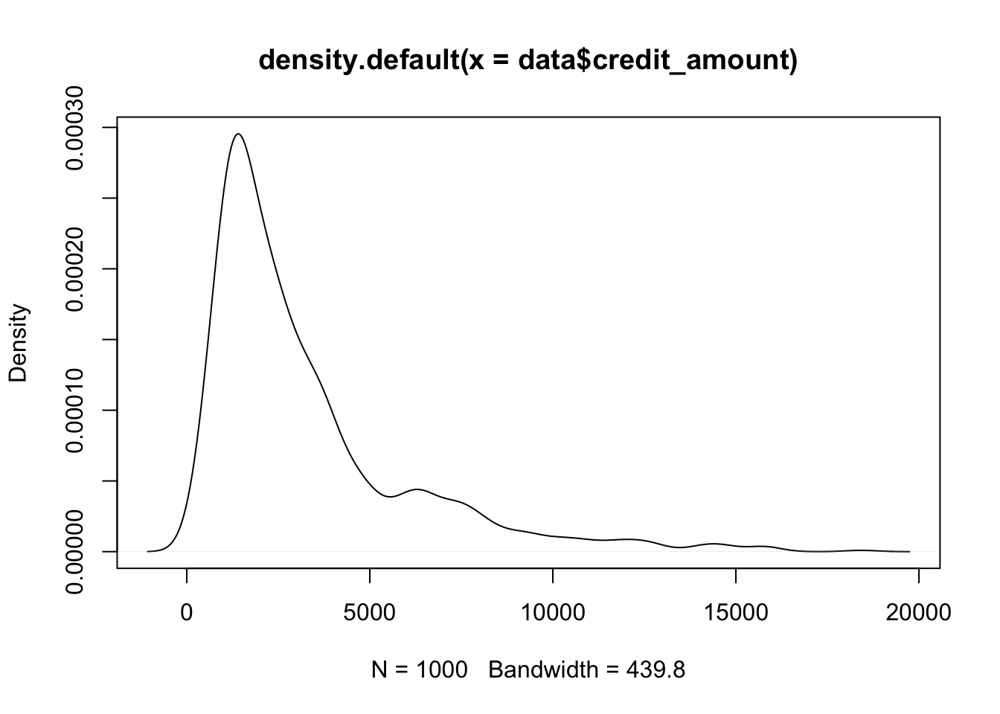